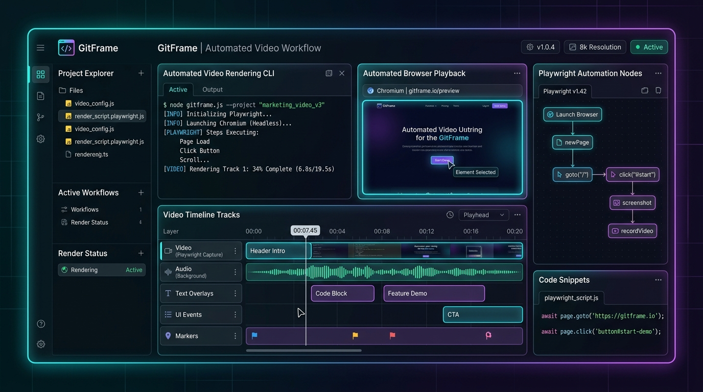

코드 실행부터 고화질 데모 영상 패키징까지 단 한 줄의 명령어로
GitFrame은 웹 프로젝트를 자동으로 빌드·실행하고, YAML 시나리오로 Playwright 브라우저 동작을 검증한 뒤 MP4 영상, SRT 한글/영문 자막, HTML 진단 리포트로 자동 패키징하는 CLI 도구입니다.
✔ Isolated Workspace: /tmp/gitframe-worktree created
✔ Playwright Playback: 18 scenarios passed (1440x900@30fps)
✔ FFmpeg Rendering: MP4 + SRT Subtitles + GIF generated

왜 GitFrame인가요?
프로젝트 검증과 데모 영상 제작에 들어가는 귀중한 시간을 혁신적으로 줄여줍니다.
프로젝트 자동 감지
Auto Project Detection
Node.js, Python, Go, Java, Docker Compose 등 프로젝트 언어와 프레임워크를 자동으로 식별하여 최적의 빌드 및 포트 구동 명령을 추천합니다.
격리된 작업 공간
Isolated Sandbox Execution
`/tmp` 임시 격리 공간에 원본 프로젝트를 복사하여 샌드박스 형태로 안전하게 빌드하고 검증하므로 로컬 원본 소스에 전혀 영향을 주지 않습니다.
Playwright 시나리오 검증
Playwright Browser Automation
YAML로 작성된 간단한 시나리오에 따라 클릭, 이동, 입력, 스크롤 동작을 고해상도 헤드리스 브라우저에서 동시 검증하고 실시간 화면을 녹화합니다.
FFmpeg 비디오 & 자막 파이프라인
FFmpeg & SRT Subtitle Compiler
시나리오 step의 caption 문구를 한글/영문 SRT 자막으로 자동 변환하고, 인트로/아웃트로 카드와 브라우저 녹화본을 1440x900 MP4/GIF로 자동 렌더링합니다.
통합 진단 리포트 패키징
Rich Diagnostic Artifacts
HTML 인터랙티브 리포트, Playwright Trace ZIP, 대표 썸네일 PNG, 스크린샷 및 검증 JSON 결과서를 단 하나의 `output` 폴더에 일괄 출력합니다.
원스톱 Git 저장소 처리
One-Stop Git Render
`gitframe create
완전 자동화된 렌더링 파이프라인
격리된 작업 공간에서 빌드부터 비디오 최종 합성까지 안전하고 완벽하게 처리됩니다.
감지 및 복사
Detect & Clone
언어/포트 감지 및 `/tmp` 격리 워크스페이스 복사
샌드박스 구동
Build & Start
의존성 설치, 빌드 실행 및 헬스체크 대기
시나리오 플레이백
Playwright Playback
Playwright 헤드리스 브라우저 테스트 및 녹화
비디오 & 자막 렌더링
FFmpeg Compositing
WebM → MP4 인트로/아웃트로 병합 및 SRT 자막 생성
아티팩트 패키징
Artifact Packaging
HTML 리포트, Trace.zip, 썸네일 최종 패키징
실제 생성된 데모 영상 사례
모든 영상은 화면 캡처 소프트웨어 없이 GitFrame CLI 명령어 하나로 자동 생성되었습니다.
SQLON Operations Platform
AI Database 통합 운영 플랫폼 — 18개 화면 자동 순환 플레이백 (세션 관리, 워크로드, DBA, Text2SQL 등)
JAMYPG Operations Platform
PostgreSQL NL2SQL 통합 운영 플랫폼 — DBA 코파일럿, OpenMetadata, 품질 게이트 시나리오 검증
Vibe Coders Gateway
AI 코딩 프록시 게이트웨이 — MCP 라우팅, Red Team 보안, 실시간 비용 대시보드 검증 데모
3분 만에 시작하는 GitFrame
기존 프로젝트에 바로 적용할 수 있는 쉬운 명령어와 YAML 설정 가이드.
1. 기존 웹 프로젝트에 GitFrame 초기화
1. Initialize GitFrame in your project
cd /path/to/my-web-project npx gitframe init
이 명령어를 실행하면 `.gitframe/gitframe.yaml` 과 `.gitframe/demo.yaml` 기본 샘플 파일이 자동으로 들어갑니다.
2. 프로젝트 설정 파일 (.gitframe/gitframe.yaml)
2. Configure (.gitframe/gitframe.yaml)
project: language: "go" # node | python | go | java | compose | static install: "go mod download" build: "go build -o server ./cmd/app" start: "./server" port: 8080 scenarioFile: ".gitframe/demo.yaml" outputDir: "output" video: width: 1440 height: 900 fps: 30 intro: title: "My Web Application" subtitle: "Automated Demo Video" duration: 3 captions: true
3. 브라우저 테스트 시나리오 정의 (.gitframe/demo.yaml)
3. Define Scenario (.gitframe/demo.yaml)
start_url: "http://localhost:8080"
steps:
- id: step-1
action: goto
url: "/dashboard"
caption: "메인 대시보드로 이동합니다"
- id: step-2
action: pause
milliseconds: 3000
- id: step-3
action: click
selector:
role: "button"
name: "데이터 로드"
caption: "데이터 불러오기 버튼을 클릭합니다"
- id: step-4
action: screenshot
name: "dashboard_loaded"
caption: "대시보드 검증이 완료되었습니다"
4. 비디오 파이프라인 실행
4. Execute Video Pipeline
npx gitframe render --output output
✔ 렌더링 완료 후 output/ 폴더에서 *.mp4, subtitles.srt, report.html 결과물을 바로 확인할 수 있습니다.
직관적인 CLI 명령어 체계
개발 흐름에 필요한 모든 동작을 간편하게 제어하세요.
현재 디렉터리에 `.gitframe` 설정 및 샘플 시나리오 파일 생성
프로젝트 언어, 빌드/실행 명령어 및 구동 포트 자동 감지
비디오 렌더링 없이 시나리오 검증만 빠르게 실행 (개발 검증용)
격리 빌드 → 시나리오 녹화 → FFmpeg 합성 비디오 풀파이프라인 실행
원격 Git 저장소를 Clone하여 전체 검증 및 비디오 패키징 원스톱 처리
Node, Playwright, FFmpeg 등 필요 의존성 도구 설치 상태 진단
자주 묻는 질문 (FAQ)
GitFrame의 활용법 및 기술 스펙에 대한 궁금증을 확인하세요.
GitFrame은 웹 애플리케이션의 개발 검증(E2E 테스팅)과 시동 데모 비디오 생성을 자동화하기 위한 도구입니다. 화면 캡처 프로그램을 켜고 수동으로 조작하는 번거로움 없이 YAML 시나리오만 정의해 두면 언제든 동일한 품질의 데모 영상과 검증 리포트를 얻을 수 있습니다.
네! GitFrame은 Playwright의 헤드리스(Headless) 브라우저 화면 녹화 기능과 시스템 FFmpeg 라이브러리를 활용합니다. GUI 디스플레이 서버가 없는 리눅스 서버나 CI/CD 파이프라인 환경에서도 100% 정상 작동합니다.
네. 시나리오 step 파일의 `caption` 필드에 기술한 설명 문구들이 타임스탬프와 매칭되어 `subtitles.srt` 자막 파일로 자동 컴파일됩니다.
GitFrame은 Apache 2.0 라이선스를 따르는 오픈소스 프로젝트입니다. 자유롭게 사용, 수정 및 배포하실 수 있습니다.